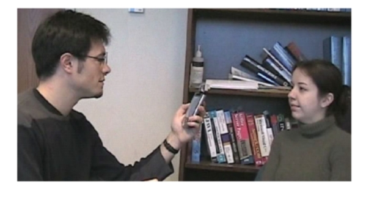
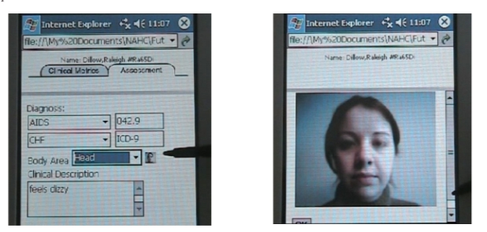

Figure 13. Convenient image capture is seamlessly integrated into the patient record
Figure 14. A thumbnail icon of the captured image can simply be clicked-on for closer inspection
In addition to capturing an image, it is often desirable to be able to augment an image with a synchronized audio commentary and associated pen markings to describe specific aspects of the patient’s condition. Hence, a multimedia annotation capability is offered that can support this requirement and be stored along with the patient record.
Current and future work includes conducting formal user studies with nursing practitioners from two home healthcare agencies to evaluate the usability and efficacy of the devices and approaches described above to inform the subsequent iteration of the prototype design.
The manner in which a networked enterprise can facilitate a plethora of ways for healthcare personnel to communicate and collaborate was explored within this chapter. The next generation of communication technologies augurs well for converged voice and data solutions on a single network. We anticipate a closer union between healthcare IT
systems and web-based communications. Technology innovation has spawned a proliferation of communication and data devices, such as GPRS cellular phones and PDAs, and with it a significant opportunity for accessing clinical information anywhere, anytime, allowing healthcare practitioners to collaborate upon clinical information and reach conclusions more effectively.
Throughout the chapter a selection of technologies has been presented that can enable healthcare personnel to interact in a variety of styles. These approaches demonstrated how multimedia technologies can be harnessed to capture information and enable users to collaborate in range of modes in an effective manner. It was also described how the knowledge captured during collaboration interactions can be saved and archived for future search, reference and reusability. In addition, technology support for home healthcare nurses is presented that shows potential for streamlining the capture and entry of information into the patient record.
The authors would like to thank our team members at Siemens Corporate Research for their contributions to the technologies described.
Bluetooth (n.d.). Online http://www.bluetooth.com Bluetooth headset from Siemens. Online http://www.siemens-mobile.com/cds/frontdoor/ 0,2241,hq_en_0_49735_rArNrNrNrN,00.html
Giles, T. (1996). The cost-effective way forward for the management of the patient with heart failure. Cardiology, 87(1), 33-39.
Hibbert, D., Mair, F.S., May, C.R., Boland, A., O’Connor, J., Capewell, S., & Angus, R.M. (2004). Health professionals responses to the introduction of a home telehealth service. Journal of Telemedicine and Telecare 10(4), 226-230.
HIPPA (n.d.). Online http://www.hhs.gov/ocr/hipaa/
Multimodal Interaction Working Group (n.d.). Online http://www.w3.org/2002/mmi/
SALT Forum (n.d.). Online http://www.saltforum.org
Sastry, C., Lewis, D. & Pizano, A. (1999). Webtour: A system to record and playback dynamic multimedia annotations on Web document content. Proceedings of the ACM International Conference on Multimedia, Orlando, October (pp. 175-178).
Siemens Biometric Mouse (n.d.). Online ?http://www.siemensidmouse.com/
Siemens IMS (n.d.). Online http://www.siemens-mobile.com/cds/frontdoor/ 0%2C2241%2Chq_en_0_860_rArNrNrNrN%2C00.html
Siemens OpenScape (n.d.). Online http://www.siemensenterprise.com/prod_sol_serv/ products/openscape/
Siemens Soarian (n.d.). Online http://www.medical.siemens.com/webapp/wcs/stores/ servlet/CategoryDisplay?storeId=10001&langId=-1&catalogId=- 1&catTree=100001,19051,19027&categoryId=19027
Siemens Information and Communications Mobile (n.d.). Online http://www.siemens mobile.com
Siemens Information and Communications Networks (n.d.). Online http:// www.icn.siemens.com
Siemens Medical (n.d.). Online http://www.medical.siemens.com
Chapter IX
Biomedical Image Registration for Diagnostic Decision Making and Treatmentx Monitoring
Xiu Ying Wang, The University of Sydney, Australia and Heilongjiang University, China
David Dagan Feng, The University of Sydney, Australia and Hong Kong Polytechnic University, Hong Kong, China
The chapter introduces biomedical image registration as a means of integrating and providing complementary and additional information from multiple medical images simultaneously to facilitate diagnostic decision-making and treatment monitoring. It focuses on the fundamental theories of biomedical image registration, major methodologies and contributions of this area, and the main applications of biomedical image registration in clinical contexts. Furthermore, discussions on the future challenges and possible research trends of this field are presented. The chapter aims to assist in a quick understanding of main methods and technologies, current issues, and major applications of biomedical image registration, to provide the connection between biomedical image registration and the related research areas, and finally to evoke novel and practical registration methods to improve the quality and safety of healthcare.
Clinical knowledge management is a challenging and broad discipline related to the collection, processing, visualization, storage, preservation, and retrieval of healthrelated data and information to form useful knowledge for making critical clinical decisions. As an important part of clinical knowledge, medical images facilitate the understanding of anatomy and function, and are critical to research and healthcare. Medical imaging modalities can be divided into two major categories: anatomical modalities and functional modalities.
Anatomical modalities, mainly depicting morphology, include X-ray, computed tomography (CT), magnetic resonance imaging (MRI), ultrasound (US). Functional modalities, primarily describing information on the biochemistry of the underlying anatomy, include single photon emission computed tomography (SPECT) and positron emission tomography (PET). With the advances in medical imaging technologies, these imaging modalities are playing a more and more important role in improving the quality and efficiency of healthcare. For example, the functional imaging techniques can be used to image physiological and biochemical processes in different organs, such as brain, lung, liver, bone, thyroid, heart, and kidney (Figure 1). In such clinical settings, PET aids clinicians in choosing the most appropriate treatment and monitoring the patients’ response to these therapies. Since information from multiple medical imaging modalities is usually of a complementary nature, proper extraction registration of the embedded information and knowledge is important in the healthcare decision making process and in clinical practice.
The combination of more advanced and user-friendly medical image databases is making medical imaging results more accessible to clinical professionals. Starting in the early 1990s, the Visible Human Project and Human Brain Project at the US National Library of Medicine have produced a widely available reference of multimodal images of the human body. These projects provide users with labeled data and the connection of structural anatomical knowledge with functional-physiological knowledge (Ackerman, 2001; Riva, 2003), and assist in making image data more usable for clinical training and surgery simulation and planning. A significant step in these virtual reality projects is the collection and registration of medical images from multiple imaging modalities.
Clinical practice often involves collecting and integrating considerable amounts of multimodality medical imaging data over time intervals to improve the optimization and precision of clinical decision making and to achieve better, faster, and more cost-effective healthcare. For example, in neurosurgical planning, the proper registration of the functional information with the detailed anatomical background enables the surgeon to optimize the operation with minimal damage to the healthy organs. The accurate and efficient registration of the complementary information available from different imaging modalities provides a basis for diagnostic and medical decision-making, treatment monitoring, and healthcare support.
A key issue in clinical knowledge management is biomedical image registration, which provides an effective mechanism to integrate the relevant information and knowledge in clinical and medical decision-making, operation planning, and image guided surgery. Registration algorithms also offer new possibilities to analyze and visualize multimodal image datasets simultaneously.